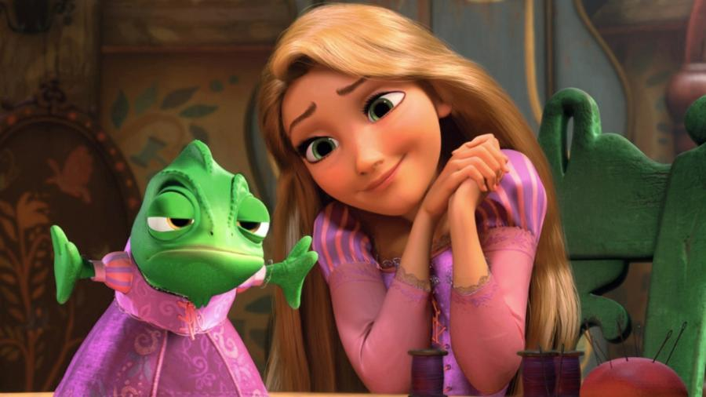
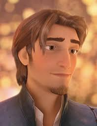
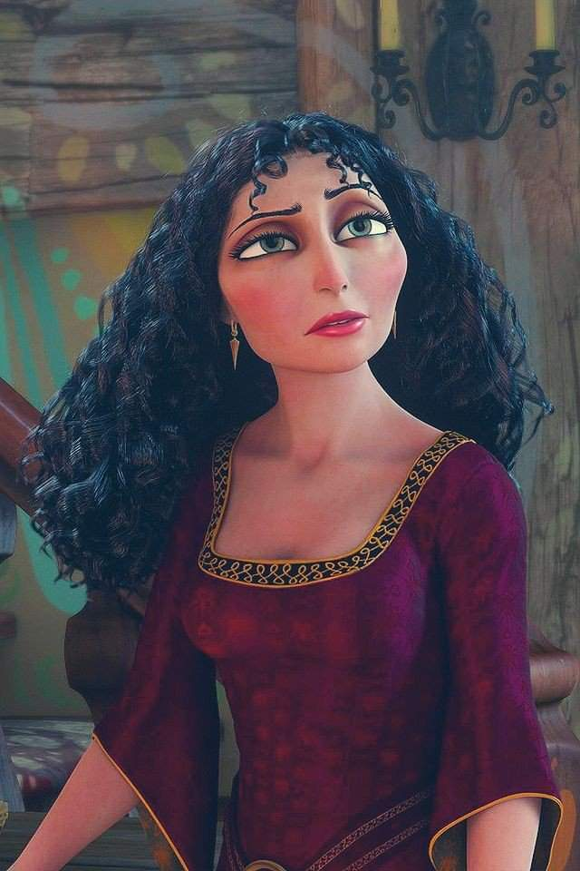

Rapunzel, uma princesa com cabelo mágico, vive presa em uma torre desde bebê. Um dia, o ladrão Flynn aparece e juntos fogem para ver as luzes do reino. No caminho, se apaixonam. Rapunzel descobre que é a princesa desaparecida e retorna ao castelo. Flynn muda de vida, e os dois vivem felizes para sempre.
| Personagem | Sobre | Imagem |
|---|---|---|
| Rapunzel | Princesa de cabelos mágicos, determinada e corajosa. |  |
| Flynn Rider | Ladrão charmoso que se transforma em herói. |  |
| Gothel | Vilã que sequestra rapunzel para usar sua magia. |  |